This all began as an attempt to translate Dad’s diaries for any of his descendants who at some stage might be interested in them. It developed into the story of how Helēna Mackevica and Jānis Avens came to start a new life in Australia. Their story forms part of the Latvian Diaspora experience, made up of the stories of displaced persons and their decendants scattered all over the World in the aftermath of WWII.
Whilst Jānis’ travels are comparatively well documented, Helēnas’ are not, even to the extent that the file related to the voyage of the Protea, which brought her here, is no longer extant in the National Archives of Australia (NAA). For this reason her part in the narrative is unfortunately much reduced.
In the diary transcriptions which follow I try to represent what Dad actually wrote, whether or not I believe the spelling or details to be correct - spelling mistakes in the English translation or commentaries / annotations are mine alone.
Prologue
Jānis Avens, son of Jānis (1875-1947) and Emīlija Gaigale (d. 1923) was born in Kosa, Latvija in 1914 (d. Melbourne 1990). Kosa is barely a speck on the map about 100km from Rīga and an hour by foot from the parish centre Skujene. It is 33km from the Provincial capital Cēsis.
Their house was called Skuķi and it was from that that Dad's Grandmother Emelīne Šarlote (n. Bernharde) got her nickname: Skuķu Māte (the old lady from Skuķi).
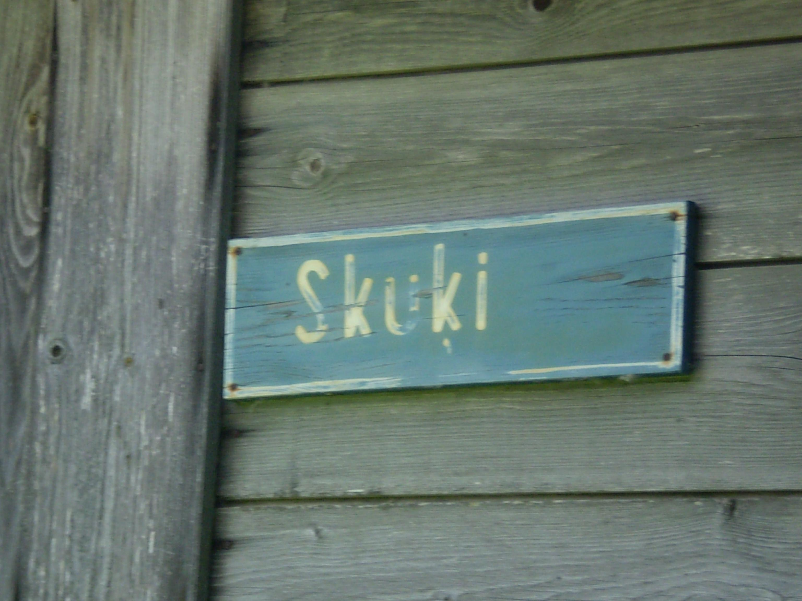
Helēna Mackēvica, daughter of Jānis Mackēvičs (d. c. 1950) and Kuna Gunda Liepus (d. c. 1950) was born in Līksna, south-eastern Latvija in 1913.
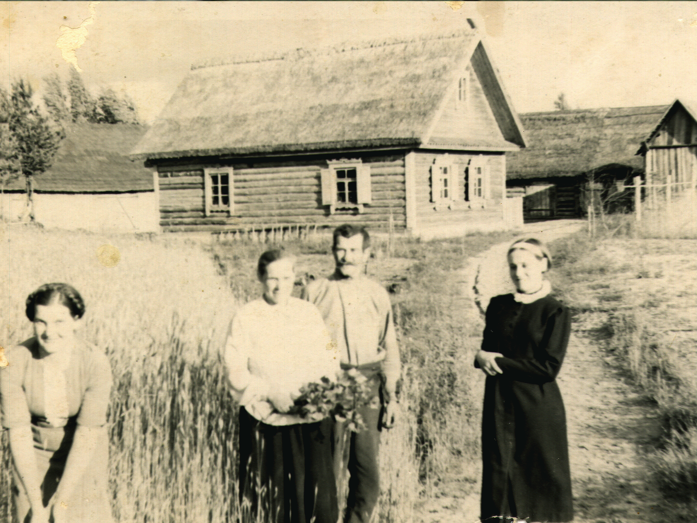
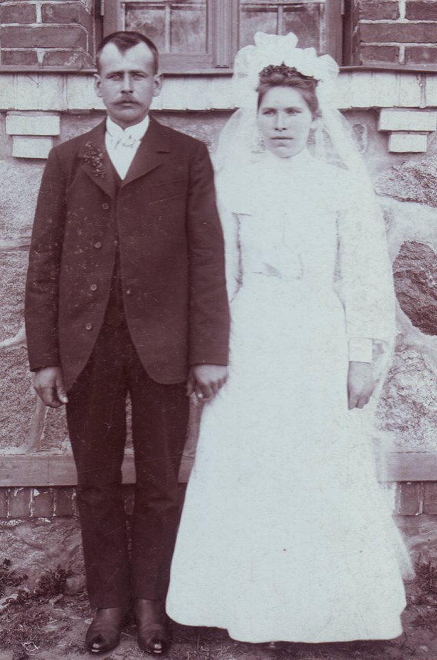
Jānis Avens and Emīlija Gaigale
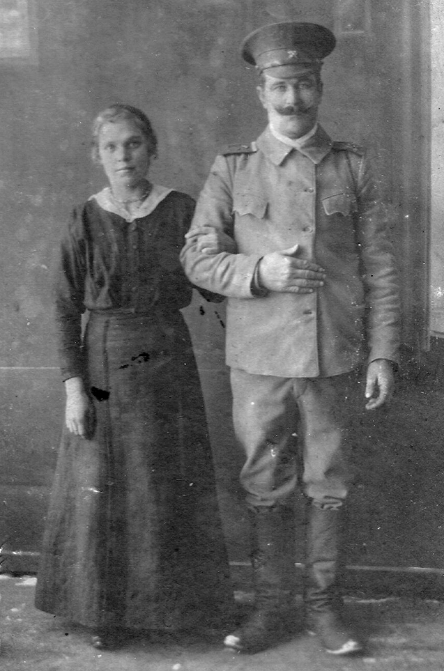
Kuna Liepus and Jānis Mackēvičs
Because Context is Everything ....
What happened is complicated and perhaps difficult to understand for those whose country has never been invaded. This situation is exacerbated by Russian propaganda which has infiltrated even generally reliable sources such as Wikipedia.
The Molotov–Ribbentrop Pact
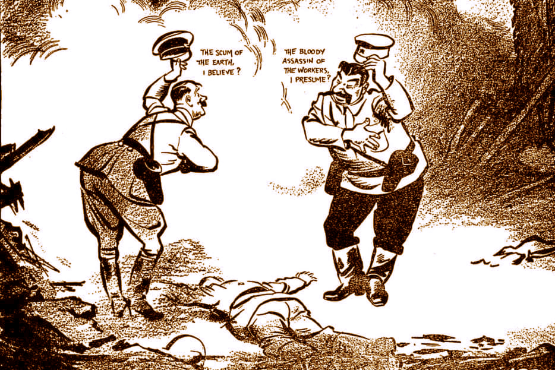
"Rendezvous" by David Low, Evening Standard, 20 September 1939, p5. Hitler and Stalin bowing politely across the dead body of Poland.
It started on August 23, 1939 with the signing of the Treaty of Non-Aggression between Germany and the Union of Soviet Socialist Republics (the so-called Molotov–Ribbentrop Pact) whereby the 20th century’s most egregious psychopaths, Hitler and Stalin divided up Europe between them and effectively began WWII. A secret protocol to the Treaty divided Poland, Romania, Lithuania, Latvia, Estonia, and Finland into German and Russian "spheres of influence". Latvia was assigned to Russia.
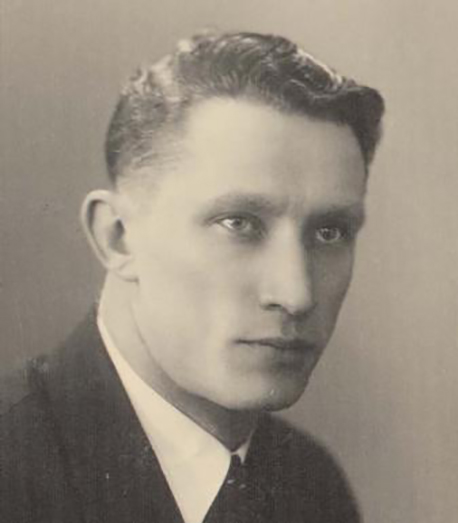
Jānis Avens was 25 when the Pact was signed.
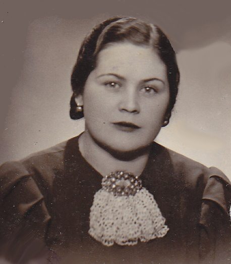
Helēna Mackevica was 26.
Soviet occupation of Latvia 1940-41: Baigais Gads / The Year of Terror
Latvia had gained its independence in 1918 with the disintegration of the Russian Empire. Now Russia wanted it back .... and there would be retribution. In accordance with the agreement with Hitler, Stalin took possession of his 'sphere of influence" and what became known as the Year of Terror (Baigais Gads) began. On June 17, 1940 Russian troops invaded Latvia, occupying bridges, post / telephone, telegraph, and broadcasting offices.
Soviet authorities, having gained control over Latvia, immediately imposed a regime of terror. Hundreds were arrested, including many leaders of the Republic of Latvia. Tribunals were set up to punish "traitors to the people".
The [first] deportation took place on 13-14 June 1941, estimated at 15,600 men, women, and children, and including 20% of Latvia's last legal government. Approximately 35,000 total (1.8% of Latvia's population) were deported during the first Soviet occupation. Stalin's deportations also included thousands of Latvian Jews (the mass deportation totalled 131,500 across the Baltics).
.... deportations were swift and efficient and came in the middle of the night. Deportees were given an hour or less to get ready to leave. They were allowed to take with them their belongings not exceeding 100 kg in weight (money, food for a month, cooking appliances, clothing). The families would then be taken to the railway station. That was when they discovered that the men were to be separated from the women and children: "In view of the fact that a large number of deportees must be arrested and distributed in special camps and that their families must proceed to special settlements in distant regions, it is essential that the operation of removal of both the members of the deportee's family and its head shall be carried out simultaneously, without notifying them of the separation confronting them ... The convoy of the entire family to the station shall be effected in one vehicle and only at the station of departure shall the head of the family be placed separately from his family in a car specially intended for heads of families".
The trains were escorted by an NKVD officer and military convoy. Packed into barred cattle cars, with holes in the floor for sanitation, the deportees were taken to Siberia. Many died before even reaching their final destination because of harsh conditions. Many more perished during their first winter.
A number of Latvians who managed to avoid deportations hid in the forests, where anti-Soviet units [Forest Brothers / Mežabrāļi] were organized.[1]
On 22 June, 1941 Hitler betrayed his co-conspirator Stalin and launched Operation Barbarossa, the invasion of Russia by Germany. German troops reached Rīga on 1 July, 1941 and controlled all Latvian territory by 10 July. Given the Russian reign of terror, the Germans were at first greeted as liberators by most Latvians. But they were about to be deceived.
With the defeat at Stalingrad the tide had turned against Germany and the War was all but lost. The toll of this, the bloodiest battle in human history amounted to an estimated 1.8 to 2 million total casualties (killed, wounded, or captured), 500,000 of them Axis forces. The drain on manpower necessitated the illegal conscription of citizens of occupied countries and in Latvia this in turn eventually led to the formation of the mendaciously named Latvian SS-Volunteer Legion.
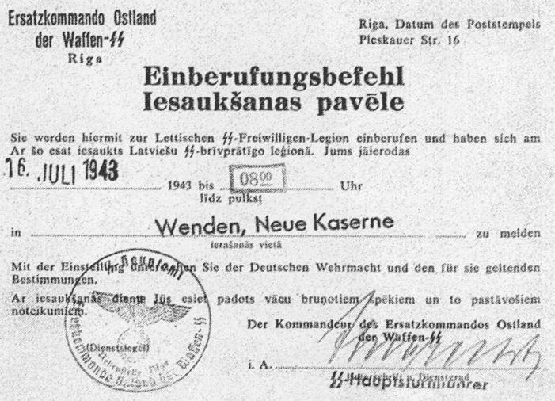
Ar šo esat iesaukts Latviešu SS-brīvprātīgo leģionā. You are hereby conscripted into the Latvian SS-Volunteer Legion.
Hague Convention (October 18, 1907): “It is forbidden to compel the inhabitants of occupied territory to swear allegiance to the hostile Power.”[2]
“The law of nations and international precedent .... is interpreted as an injunction against the implementation of mandatory military conscription policies over the local populace....”[3]
“The punishment for draft evasion: “At a time when each true Latvian man who can carry a weapon is standing guard over his fatherland, three strong young men have chosen a different route... The Special War Tribunal of the General Inspectorate of the Latvian SS Volunteer Legion heard evidence against Edgars Vilciņš, Osvalds Streļķis and Jānis Vilciņš... The Special War Tribunal sentenced 26 year old Edgars Vilciņš and 23 year old Osvalds Streļķis to 15 years of hard labour...” (Tēvija, 20 September 1944)[4]
“By order of Gen. Friedrich Jeckeln, Lt. Col. Voldemārs Ģinters began forming the 319th Latvian police battalion at the end of October 1943 from former ("C" group) National Guards selected by district chairmen [in Kosa K. Ezergailis]. The newly formed battalion was to operate only within the borders of Latvia, and the conscripts would serve only 8 weeks in the battalion. The formation of the battalion took place hurriedly in Rīga, at 93 Brīvības Street .... The majority of the soldiers assigned to the battalion had already served in the Latvian army, but they were of different ages and were conscripted without a medical examination.”[5]
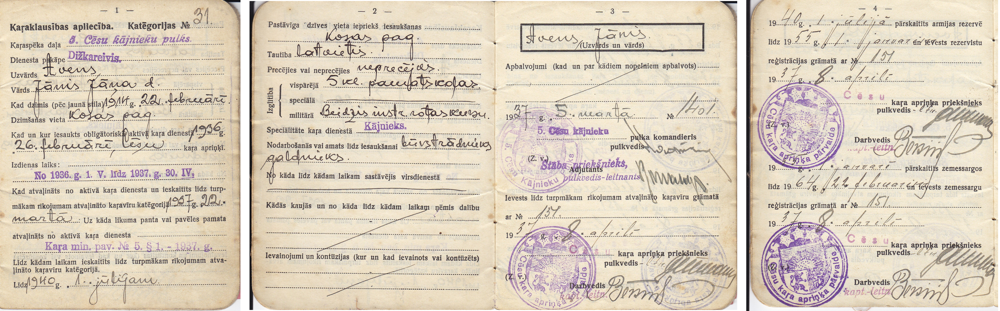
Jānis' National Service document showing him assigned to reserves until 1 Jan 1955
"Like me, no one else went voluntarily but neither did they particularly resist – because everyone still had vivid memories of the deportations of June 14, 1941, when the Russians deported 15,400 innocent people, adults and children, to Siberia. We fought against those who deported them, not to support the Nazi state." Ādolfs Avens[6]
“In 1946, the Nuremberg Tribunal declared the Waffen-SS to be a criminal organization, making an exception of people who were forcibly conscripted. Throughout the post-war years, Allies would apply this exception to the soldiers of the Latvian Legion and the Estonian Legion."[7]
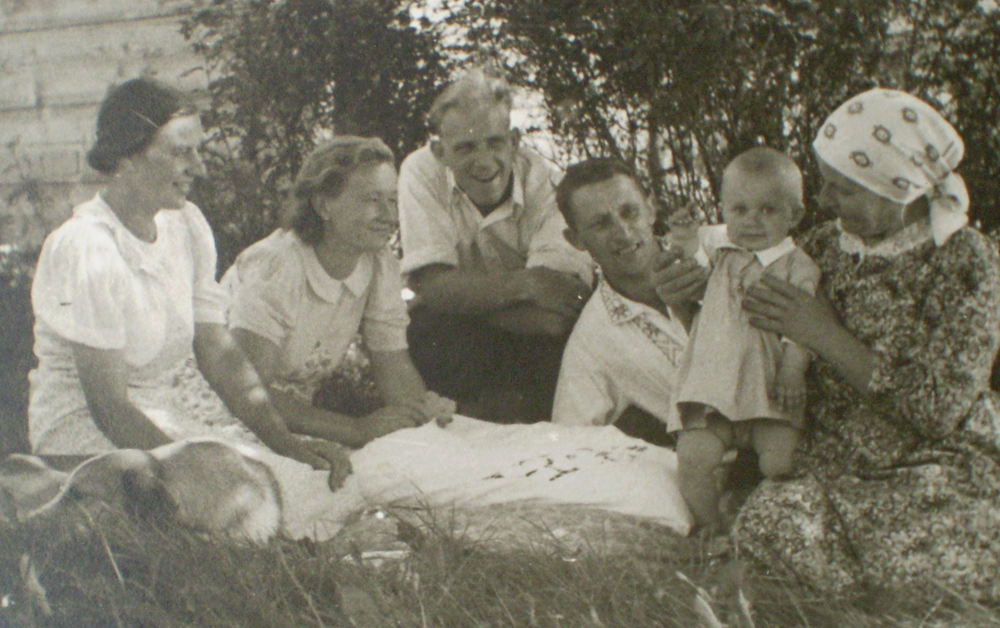
Olga (Dad's first wife), Lidija (Sister), Ādolfs Avens (Cousin), Dad (age c. 28), Imants (Our half brother), Olga's mother Ieva (later called “māmuļiņa”) c. 1942 at Skuķi
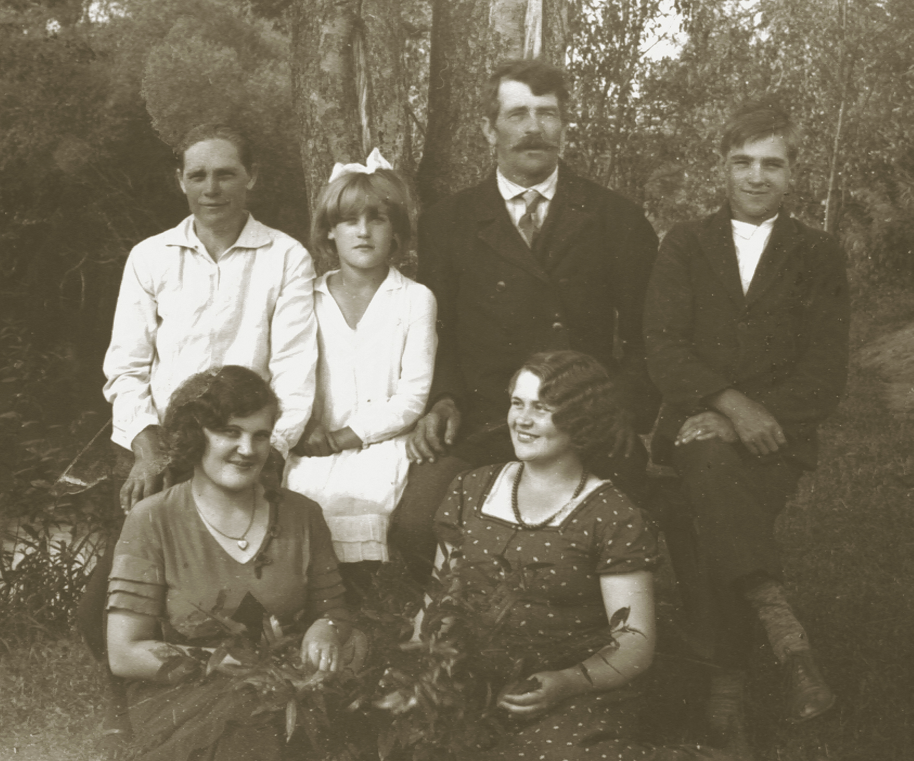
Mum's family, f.l. Tekla (s), Helēna, b.l. Kuna Liepus (mother), Mārija (s), Jānis Mackēvičs (father), Antons (b) c. 1936?, near Līksna
Jānis Avens’ life was to take an unimaginable change of course on 22 October, 1943.
Hover for video
My Father’s cousin Ādolfs in 2008 relates how he and Jānis were both conscripted in October 1943. Separated by WWII they would be reunited 40 years later when he and his wife visited Australia.
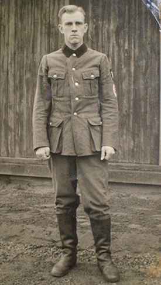
Ādolfs in his Reichsarbeitsdienst uniform
Russian occupation of Latvia 1944-91
When it was all over with millions dead for no sane reason, Hitler died a coward's death by suicide on 30 April, 1945. His co-conspirator Stalin proclaimed himself the saviour of Europe and continued his murderous ways until eventually meeting his maker in Hell on 5 March, 1953.
The second Russian occupation of Latvia brought with it further deportations. The anti-Soviet Mežabrāļi units which had formed during the first Russian Occupation continued their resistance activities during the Second Occupation, despite only lukewarm Western support and actual betrayal by traitors such as Kim Philby and his henchmen. A general amnesty was offered for the survivors with the death of Stalin in 1953 and all but a few groups then disbanded.
Residents of areas in which the Mežabrāļi were particularly active (such as Ilūkste near Līksna) were sympathetic towards them and rendered what assistance they could. This was a dangerous thing to do. As far as we know Helēna's parents would provide partisans with food and were shot at their farm by Soviet troups for doing so around 1950.
The Russian Occupation lasted until the disintegration of the USSR in 1991 and the departure of the last Russian troops from Latvian soil on August 31, 1994.